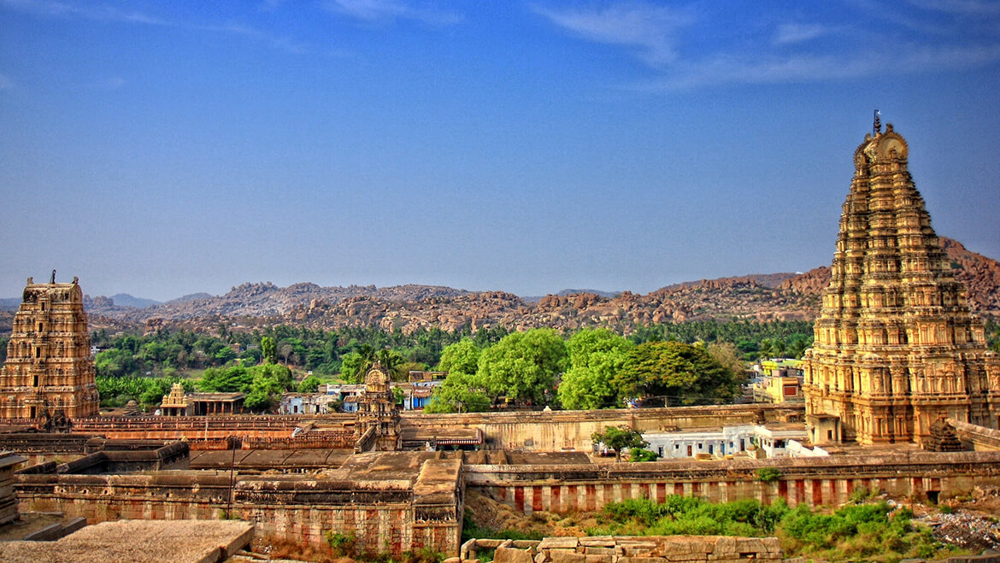

Karnataka
"One State, Many Worlds"
Quick Facts
Popular Tourist Attractions

Hampi
Ancient ruins of the Vijayanagara Empire with stunning architecture and temples.
Mysore Palace
A majestic royal residence and a symbol of Karnataka’s cultural glory.

Coorg
Lush green hills and coffee plantations, known as the Scotland of India.
Nature & Wildlife
Home to Nagarhole and Bandipur National Parks, Karnataka is rich in biodiversity with tigers, elephants, leopards, and more.
Famous Personalities
- Sir M. Visvesvaraya: Legendary engineer and statesman.
- R.K. Narayan: Renowned novelist.
- Rahul Dravid: Former Indian cricketer.
Local Handicrafts
Mysore silk sarees, sandalwood carving, Bidriware, and Channapatna toys are famed across the country.
Climate
Moderate to tropical climate — pleasant in the hills, warmer in the plains, with monsoon rains from June to September.
Culture & Festivals
Folk Dance & Music
Yakshagana, Dollu Kunitha, and Carnatic music form the cultural core.
Festivals
Mysore Dussehra, Ugadi, and Karaga festival are major celebrations.
Cuisine
Famous for Bisi Bele Bath, Ragi Mudde, Mysore Pak, and Udupi dishes.
Clothing
Traditional attire includes Mysore silk sarees and panche with jubba for men.
Did You Know? Karnataka is the largest coffee producer in India and home to the Silicon Valley of India — Bengaluru.
Note: Information may be subject to updates. Kindly notify us of any discrepancies.